Alimentação
O feno de capim deve ficar disponível durante todo o dia. A ração precisa ser oferecida em porções controladas, e folhas verdes podem complementar a alimentação. A cenoura deve ser apenas ocasional.
Ao longo da jornada, você acompanhou o novo tutor, aprendeu com a mediação da Veterinária e aplicou esses conhecimentos no desafio interativo de tomada de decisão. Agora, você consegue analisar com mais responsabilidade situações relacionadas à alimentação, ao manejo e ao ambiente de um coelho.
A jornada termina aqui, mas a aprendizagem continua por meio da observação, do diálogo, da troca de experiências e da orientação de profissionais.
Conhecimentos construídos durante a jornada.
O feno de capim deve ficar disponível durante todo o dia. A ração precisa ser oferecida em porções controladas, e folhas verdes podem complementar a alimentação. A cenoura deve ser apenas ocasional.
O coelho deve ser segurado com o corpo totalmente apoiado: uma mão sustenta o peito e a outra apoia a parte traseira. Ele deve permanecer próximo ao corpo da pessoa e nunca ser levantado pelas orelhas.
O coelho precisa de um espaço amplo, protegido e tranquilo para correr e explorar. Uma toca oferece segurança, e brinquedos próprios contribuem para o enriquecimento do ambiente.
Na Teoria Sociocultural, a aprendizagem é construída nas relações com outras pessoas, por meio da linguagem, da orientação e da colaboração. Por isso, o cuidado responsável com um coelho não precisa ser aprendido de forma isolada.
A NATEC — Núcleo de Apoio a Tutores de Coelhos — é uma iniciativa de extensão universitária dedicada à cunicultura pet com base científica. Por meio do Instagram, compartilha informações e oferece apoio educativo a tutores de coelhos.

NATEC Núcleo de Apoio a Tutores de CoelhosInformações institucionais, formas de apoio e canais de divulgação.
O encontro será um espaço de diálogo, troca de experiências e ampliação dos conhecimentos entre tutores e profissionais. As informações sobre programação, local e participação serão divulgadas no Instagram oficial da NATEC.
Ver informações no InstagramTrabalho desenvolvido no âmbito do Projeto Integrado de Extensão do curso de Sistemas e Mídias Digitais.
Curso: Sistemas e Mídias Digitais
Instituição: Universidade Federal do Ceará
Instituto: UFC Virtual
Semestre: 2026.1
A Jornada do Nupi foi desenvolvida de forma multidisciplinar, articulando conhecimentos de Cognição e Tecnologias Digitais, Comunicação Visual, Narrativas Multimídia e Programação II. Essa integração permitiu unir a fundamentação da Teoria Sociocultural, a construção da narrativa educativa, a identidade visual e o desenvolvimento da experiência interativa.
Participação institucional durante o desenvolvimento do projeto.
As informações técnicas apresentadas em A Jornada do Nupi foram fornecidas pela NATEC e adaptadas pela equipe para uma experiência educativa digital.
Ferramentas de inteligência artificial generativa foram utilizadas como apoio na produção de algumas imagens e no refinamento de textos. As decisões finais, a revisão e a organização do conteúdo foram realizadas pela equipe responsável pelo projeto.
Este conteúdo possui finalidade educativa e não substitui consulta, diagnóstico ou orientação de um médico-veterinário. Ao perceber mudanças no comportamento, na alimentação ou na saúde do coelho, procure atendimento profissional.